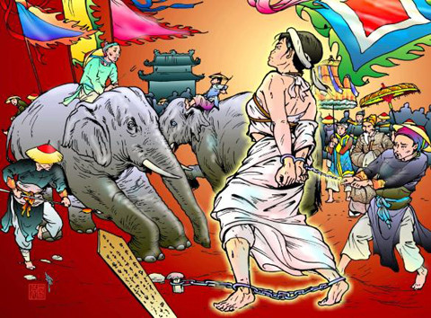

Tháng 7 năm Nhâm Tuất (1802), Nguyễn Phúc Ánh trở về Phú Xuân, đem Vua tôi nhà Tây Sơn ra báo thù.
Tất cả các võ tướng đều bị tử hình, Trần Quang Diệu bị lột da, các tướng khác bị voi chà, người trảm quyết.
Từ vị đại tướng đến viên tùy tướng, thảy thảy đều giữ bản sắc anh hùng, không một nét sợ hãi, không một lời cầu nhiêu, hiên ngang, khẳng khái.
Riêng đối với Bùi Thị Xuân, Nguyễn Phúc Ánh dùng hình phạt khốc liệt nhất quán cổ kim!
Vốn nghe danh nữ kiệt, Nguyễn Phúc Ánh truyền đem đến xem mặt, Nguyễn Phúc Ánh tự đắc hỏi:
- Ta và Nguyễn Huệ, ai hơn?
Nữ kiệt ung dung đáp:
- Nói về tài ba thì Tiên Ðế ta bách chiến bách thắng, hai bàn tay trắng dựng nên cơ đồ. Còn nhà ngươi bị đánh phải trốn chui trốn nhủi, phải cầu viện ngoại bang, hết Xiêm đến Pháp. Chỗ hơn kém rõ ràng như ao trời nước vũng. Còn nói về đức độ, thì Tiên Ðế ta lấy nhân nghĩa mà đối xử với kẻ trung thần thất thế, như đã đối với Nguyễn Huỳnh Ðức, tôi nhà ngươi. Còn nhà ngươi lại dùng tâm của kẻ tiểu nhân mà đối với những bậc nghĩa liệt, đã hết lòng vì chúa, chẳng nghĩ rằng ai có chúa nấy, ái tích kẻ tôi trung của người tức là khuyến khích tôi mình trung với mình. Chỗ hơn kém cũng rõ ràng như ban ngày và đêm tối. Nếu Tiên Ðế ta đừng thừa long sớm, thì dễ gì nhà ngươi trở lại đất nước này.
Nguyễn Phúc Ánh hỏi gằn:
- Nhà ngươi có tài sao không giữ ngai vàng cho Cảnh Thịnh?
Nữ kiệt đáp:
- Nếu có thêm một nhi nữ như ta nữa thì cửa Nhật Lệ không dễ gì mà lạnh. Cửa Nhật Lệ không để lạnh, thì nhà ngươi cũng khó mà đặt chân lên đất Bắc Hà.
Nguyễn Phúc Ánh hỏi có muốn xin ân xá không?
Nữ kiệt đáp:
- Ta đâu có sợ chết mà phải chịu nhục, hạ mình trước một kẻ tiểu nhân đắc thế?
Nguyễn Phúc Ánh căm gan, dằn từng tiếng.
- Không chịu nhục? Ta sẽ làm cho mi biết nhục.
Liền truyền lệnh: Ðem Bùi Thị Xuân về Bình Ðịnh, cởi bỏ hết quần áo, cột đứng trên tù xa đẩy đi khắp các nơi thị tứ.
Nhân dân Bình Ðịnh nghe tin, không ai bảo ai, mà mỗi lần xe nữ kiệt đi qua, thì nhà hai bên đường đều đóng kín cửa, người đi đường, người nhóm chợ, đều ngoảnh mặt bỏ tránh xa.
Xe đến vùng Ðập Ðá là nơi dệt lụa, thì những tấm lụa tinh khôi bay tung vào xe. Lớp bị bọn tướng sĩ hộ tống vung gươm chém đứt, theo gió bay lên không trung, lớp rơi vào xe phủ kín châu thân nữ kiệt.
Nữ kiệt lại bị giải về Phú Xuân, Nguyễn Phúc Ánh hỏi:
- Ðã biết nhục chưa?
- Nhục nào có vương vào thân ta, mà chính đổ lên đầu nhà ngươi, con người tánh độc hơn sài lang, lòng nhớp hơn cẩu trệ.
Nguyễn Phúc Ánh tức giận, truyền bắt mấy người con của nữ kiệt đem ra giết trước mặt nữ kiệt: Mấy người con nhỏ thì sai lực sĩ bỏ vào bao vải, đánh nát thây. Còn người con gái lớn thì cho voi xé xác. Thấy voi đến, người con gái hoảng sợ kêu lên:
- Mẹ ơi! Cứu con với!
Nữ kiệt hét lớn:
- Con nhà tướng không được khiếp nhược.
Người con gái liền nhắm mắt thọ hình, không một tiếng rên rĩ. Ðến lượt nữ kiệt.
Chúng trói nữ kiệt để nằm ngửa trên cỏ. Ba hồi trống dứt, một con voi to lớn hung hăng chạy đến, giơ chân toan chà. Nữ kiệt trợn mắt hét một tiếng như sấm nổ. Con voi thất kinh thối lui. Bị nài giục, voi bước tới một lần nữa, nhưng vừa bước tới liền dừng bước ngay, thúc mấy cũng không dám tiến. Lính lấy giáo đâm, voi thét lên một tiếng rồi bỏ chạy.

.
Nguyễn Phúc Ánh tức mình, sai dùng hình phạt điểm thiên đăng.
Chúng lấy vải nhúng sáp nóng đem quấn khắp mình nữ kiệt, rồi đem cột nữ kiệt nơi trụ sắt dựng giữa trời. Ðoạn châm lửa đốt. Nữ kiệt bình tĩnh, nét mặt không chút thay đổi. Lửa cháy phừng phực từ dưới lên trên, sáng chói thấu mây. Ai nấy đều xúc động.
Riêng Nguyễn Phúc Ánh tỏ vẻ hân hoan!
Lửa cháy hồi lâu. Bốn bề im phăng phắc. Bỗng một tiếng nổ.
Sọ nữ kiệt vỡ. Một lằn thanh quang bay vút lên tầng xanh!
Xử tướng võ xong, xử đến các quan văn.
Phần nhiều đều được tha về cho làm ăn.
Riêng Ngô Thời Nhậm và Phan Huy Ích thì bị giải về Thăng Long và đánh đòn tại Văn Miếu.
Phan Huy Ích còn sống trở về nhà.
Ngô Thời Nhậm bị Ðặng Trần Thường đánh chết.
Ðặng Trần Thường là một danh sĩ Bắc Hà. Lúc Ngô Thời Nhậm được Vua Quang Trung trọng dụng, thì Ðặng Trần Thường đến xin Ngô tiến cử. Trông thấy vẻ khúm núm làm mất phong độ của kẻ sĩ, Ngô thét bảo Thường:
- Ở đây cần dùng người vừa có tài vừa có hạnh giúp Vua cai trị nước. Còn muốn vào lòn ra cúi thì đi nơi khác.
Ðặng Trần Thường hổ thẹn ra về, rồi mang khăn gói vào Nam, phụng sự Nguyễn Phúc Ánh.
Nay đắc thế liền trả thù xưa.
Ðó là đối với bề tôi nhà Tây Sơn. Còn đối với nhà Tây Sơn thì Nguyễn Phúc Ánh chém tất cả dòng họ, từ Vua Bửu Hưng, cho tới một em bé mới sanh mà đã lọt vào ngục thất. Lại truyền đào mả Vua Thái Ðức và Vua Quang Trung, nghiền xương đổ xuống bể. Còn sọ thì đem xiềng nơi ngục thất trong hoàng cung để làm lọ đi tiểu.
Ðể nhổ cỏ cho sạch gốc, Nguyễn Phúc Ánh sức mọi nơi truy tầm những bà con gần xa của họ Nguyễn Tây Sơn, và những tướng tá của Tây Sơn còn trốn tránh nơi sơn dã.
Hai người con Vua Thái Ðức là Văn Ðức, Văn Lương và cháu nội, con Nguyễn Bảo, là Văn Ðẩu, nương náu nơi Mộ Ðiểu, vùng An Khê. Vua tôi nhà Nguyễn biết nhưng sợ người Thượng, không dám đến bắt. Mãi đến năm Minh Mạng thứ 12 (1832) thấy tình thế đã yên, ba chú cháu mới đem nhau về thăm quê cũ ở Kiên Mỹ. Bọn bất lương đi mật báo. Quân nhà Nguyễn đến vây bắt giải về Phú Xuân giết chết.
Các danh tướng giúp nhà Tây Sơn dựng nghiệp, phần lớn đã qua đời, như:
- Nguyễn Văn Tuyết đã cùng vợ con tuẫn nghĩa sau khi thất thủ Bắc Thành.
- Võ Văn Nhậm bị Nguyễn Huệ giết chết.
- Ðặng Xuân Bảo hy sinh trong trận Nguyễn Phúc Ánh đánh lấy Thanh Hóa.
- Ngô Văn Sở bị dìm xuống sông vì nạn Bùi Ðắc Tuyên.
- Lê Văn Hưng bị Cảnh Thịnh nghe lời Bùi Ðắc Tuyên giết chết.
- Võ Ðình Tú bị trúng tên chết lúc Nguyễn Phúc Ánh đem đại binh đánh Quy Nhơn.
- Lê Văn Trung bị Cảnh Thịnh giết.
Còn sống ở ngoài tầm nanh vuốt của Gia Long chỉ được ít người: Võ Văn Dũng, Ðặng Văn Long, Ðặng Xuân Phong, Phan Văn Lân, Phạm Công Chánh, Lê Sĩ Hoàng, Nguyễn Văn Huy, Nguyễn Văn Lộc.
Sau khi thoát nạn, Võ trở về Phú Phong, rồi lên An Khê, chiêu mộ được một số người Thượng, chuẩn bị việc phục thù. Lấy hòn Hợi Sơn ở Trinh Tường (Bình Khê) làm căn cứ quân sự. Do đó mà Hợi Sơn còn có tên là hòn Ông Dũng.
Nghe tin Ðặng Văn Long ẩn náu ở Vân Hội (Tuy Viễn) bèn tìm đến bàn đại sự.
Ðặng Văn Long, sau trận Ðống Ða thì đã có ý lui gót. Nhưng vì mấy kẻ bề tôi của Lê Chiêu Thống không nghĩ đến tội cõng rắn của mình, cứ nổi lên chống lại nhà Tây Sơn, nên Ðặng phải nán lại để đánh dẹp. Ðến khi thấy Cảnh Thịnh để cho quần thần lộng hành, mối nước sanh rối, Ðặng bèn từ chức, trở về An Nhơn mở trường dạy võ. Nhưng rồi thấy kẻ học võ lúc này không có chí lớn, ai nấy cũng chỉ nghĩ đến lợi riêng, Ðặng liền đóng cửa trường, lên núi làm rẫy.
Võ Văn Dũng đến, Ðặng mừng được gặp lại cố tri. Nhưng khi nghe Võ bàn đến chuyện phục hưng thì lắc đầu, đáp:
- Tôi ra giúp nhà Tây Sơn đâu phải vì nhà Tây Sơn mà chính vì Tổ quốc. Nếu giặc Thanh không mang quân sang xâm lấn nước ta, thì tôi mãi làm con hạc nội, máu đâu dính đến tay. Còn về nhà Tây Sơn, chính Cảnh Thịnh đã làm mất. Song nếu Vũ Hoàng không bỏ đích lập thứ thì đâu đến nỗi nước này?! Nay đất đã mất mà lòng người cũng mất, hỏi còn mong làm được việc gì nữa? Mà dù có làm được nữa thì làm để làm gì, nếu không phải để tranh chiếm ngôi báu? Tranh cho ai? Cho nhà Tây Sơn hay cho chính mình? Thôi, trên ba mươi năm trời đánh nhau, nhân dân đã điêu đứng rồi, không nên gieo rắc thêm tang tóc.
Võ ra về, Ðặng lên ở luôn trên núi. Trong nơi mây khói, không ai biết Ðặng ở ngọn núi nào trong dãy Nam Sơn.
Ý kiến của Ðặng Văn Long không lay chuyển ý chí của Võ Văn Dũng nổi.
Về Bình Khê, Võ Văn Dũng tiếp tục xây dựng lực lượng chiến đấu. Toàn vùng An Khê và những vùng ở hai bên bờ sông Côn, như Tiên Thuận, Vĩnh Thạnh, Ðồng Phó, Hà Nhung, Trinh Tường, Phú Lạc, Phú Phong, Kiên Mỹ... đều nằm trong phạm vi hoạt động của Võ công. Nhưng được ít lâu, người Thượng Xà Ðàng bị nhà Nguyễn mua chuộc, rục rịch làm phản. Công phải bỏ hết cơ sở, đem ba chú cháu Văn Ðức, Văn Lương, Văn Ðẩu lên ẩn náu tận trên Núi Xanh.
Ca dao địa phương có câu:
Củ lang đồng Phó, đỗ phộng Hà Nhung
Chàng bòn thiếp mót để chung một gùi
Chẳng qua duyên nợ sụt sùi
Chàng giận chàng đá cái gùi chàng đi...
Chim kêu dưới suối Từ Bi
Nghĩa nhân còn bỏ huống chi cái gùi
Ðó là mượn thể tỷ để nói về việc bất hòa giữa Võ công và người Thượng.
Võ công lên Núi Xanh ở cùng ba chú cháu Văn Ðức cho đến khi ba chú cháu bị sa vào lưới Vua Minh Mạng. Còn trơ trọi một mình, công vẫn sống một cách tự tại ngót mười năm nữa. Công mất dưới triều Thiệu Trị, không rõ năm nào, sống trên chín mươi tuổi. Mãi đến khoảng Ðồng Khánh, Thành Thái (1885-1907), con cháu mới lấy cốt đem về chôn ở Phú Phong.
Cụ Vân Sơn Nguyễn Trọng Trì có bài Vịnh Võ Ðô Ðốc:
Tạo vật khốn hào kiệt
Y tương sử hữu vi
Công danh vị túc ngôn
Hoặc tác xuất thể ty (tư)
Võ công dũng quán quân
Bách chiến khởi Tây thùy
Thiên phương yểu trung nguyên
Ðãi phi nhất mộc chi
Thoát thân tứ thập niên
Thế nhân thức công thùy
Ðản kinh sơn thạch gian
Hữu thử hùng báo ty (tư)
Ngã diệc chí phương ngoại
Bạch đầu vị phùng sư
Niên niên hạnh thế phóng
Thảng toại dữ thế từ
Tùng công du Ngũ Nhạc
Khể thủ thôn linh chi
Kim cốt hoán lục tủy
Khiêm nhiên tùng sao phi
Nghĩa là:
Tạo hóa làm khốn đốn kẻ hào kiệt
Ý muốn cho họ làm một việc gì.
Công danh không đủ nói,
Hoặc giả bày ra cơ hội để họ thoát đời.
Cái dũng của Võ công thật quán quân,
Từ biên giới phía Tây nổi lên, trăm trận trăm thắng
Nhưng trời muốn dứt nửa chừng
Thì một cây không chống nổi.
Thoát mình khỏi nạn ngót bốn mươi năm
Người đời ai biết ông?
Sống lâu ngày trong nơi núi vây đá chất
Ông có tư thế mạnh như gấu như hùm
Tôi cũng có ý muốn xuất thế,
Nhưng đã bạc đầu mà chưa gặp được thầy.
Làm quan may được đuổi về
Năm năm rảnh rang
Muốn thoát khỏi cuộc đời
Theo ông đi dạo chơi khắp năm ngọn núi Tiên
Cúi đầu ăn cỏ linh chi,
Xương vàng đổi tủy xanh
Nhẹ nhàng bay theo sóng tùng.
Ngoài Võ Văn Dũng, còn một số lương tướng nữa thoát luật ác nghiệt của Gia Long, như:
Ðặng Xuân Phong năm Cảnh Thịnh thứ ba, được thăng chức Thái Phó, ban tước Huyện Công Tuy Viễn. Ðến khi Nguyễn Bảo bị giết, bà họ Trần đem con cháu lên An Khê lánh nạn, thì Ðặng công từ quan lui về Dõng Hòa dưỡng lão. Ðược năm năm, nghe tin Phú Xuân thất thủ, Vua Cảnh Thịnh chạy ra Bắc Thành, Công mở tiệc mời thân bằng cố hữu đến, nói:
- Kẻ hào kiệt ra phò nhà Tây Sơn, phần nhiều đều là bậc trung nghĩa. Nhưng hầu hết đều dày công dày sức trong lúc xây dựng, mà không một ai đủ khả năng chống đỡ trong lúc ngã nghiêng! Nay mai mà Nguyễn Phúc Ánh thu trọn cả Bắc Nam, thì đất bằng nổi sóng, đám cựu thần nhà Tây Sơn, không còn chỗ đặt tay chân. Nếu đợi nước đến trôn, thì không còn nhảy kịp nữa.
Mấy hôm sau, có người đến thăm, thì thấy nhà không vườn trống. Ðặng công đưa gia quyến đi lúc nào và đi về đâu, không một ai hay biết.
Phan Văn Lân, lo việc biên phòng, nghe tin Cảnh Thịnh đoạt sự nghiệp của Thái Ðức, than dài một tiếng:
- Luân thường đã đứt, sự nghiệp không thể nào vững được lâu!
Rồi giao công việc trong quân cho vị phó tướng, về An Thái thăm thầy. Thầy đã mất rồi, phò mã Trương Văn Ða cũng đã mất. Nơi xưa không còn ai là người cũ. Công bèn hỏi thăm phần mộ, ra thắp hương lạy thầy, ra đi... Như đám mây trôi trên ngàn thẳm.
Phạm Công Chánh trấn thủ Quảng Nam, Lê Sĩ Hoàng trấn thủ Quảng Nghĩa, nghe tin Bắc Thành thất thủ, liền mở kho phân phát hết quân lương quân trang cho binh sĩ, cho mọi người về quê quán làm ăn, còn mình thì một thương một ngựa ra đi. Phạm Công Chánh về ẩn núi Phương Phi tại Phù Cát, sau ra Cao Bằng. Lê Sĩ Hoàng về Quảng Nam, lên ẩn nơi Ngũ Hành Sơn.
Nguyễn Quang Huy, Nguyễn Văn Lộc ở Quy Nhơn, cũng như Phạm Công Chánh, Lê Sĩ Hoàng ở Quảng Nam, Quảng Nghĩa, sau khi được tin Vua Cảnh Thịnh bị bắt, thì giải tán quân đội. Ông Lộc về Kỳ Sơn, dùng Hầm Rùa làm nơi trú ẩn. Ông Huy lên Dương An nương náu, thỉnh thoảng về Phú Yên thăm quê hương, và ra Kỳ Sơn thăm ông Lộc.
Trừ Võ Văn Dũng, Nguyễn Quang Huy cũng như Nguyễn Văn Lộc và hầu hết các tướng còn sống sót, không một ai nuôi chí phục thù.
Một hôm ông Lộc hỏi ông Huy:
- Cựu thần nhà Tây Sơn, văn cũng như võ, còn khá nhiều tay tài tuấn, sao không hợp sức lại để lo việc phục hưng? Như thế chẳng ra là không tận trung với cựu chúa hay sao?
Ông Huy đáp:
- Những anh hùng nghĩa sĩ, ra giúp nhà Tây Sơn từ ngày mới khởi nghĩa cho đến nay, không ai phụ nhà Tây Sơn. Tất cả đều lo tròn bổn phận cho đến giờ chót, như thế là tận trung. Nay nhà Tây Sơn đã không còn nữa thì chúng ta còn trung với ai? Bầy tôi của Vua Lê Chiêu Thống bo bo giữ lòng trung với cố chủ, nổi dậy đánh ở miền Bắc, hết lớp này đến lớp khác, đã chẳng lợi gì cho nhà Lê mà còn làm khổ dân hại nước. Phải nghĩ đến dân đến nước trước. Không có thể làm lợi cho dân cho nước thì nằm yên chớ không nên gây thêm rối. Trung với một người, một nhà mà làm hại cho dân cho nước, thì trung ấy, kẻ chân chính không nên nghĩ đến. Trung ấy không phải là trung.
Nguyễn Phúc Ánh dò biết tung tích của một số cựu tướng nhà Tây Sơn, tìm đủ cách để tận diệt. Nhưng núi non đã hiểm trở lại thêm người địa phương che chở, nên mọi người đều sống yên. Không bắt giết được, Nguyễn Phúc Ánh bèn dụ hàng, nhưng không người nào đáp ứng.
Báo quốc nhất thân đô thị đảm
Giao tình thiên tải chỉ luân tâm
Nhà Nguyễn đối với nhà Tây Sơn vô cùng khắc nghiệt. Quật mả Vua Thái Ðức, Vua Quang Trung, chém giết dòng họ, tướng tá nhà Tây Sơn đến thế, Nguyễn Phúc Ánh chưa cho là đủ, còn truyền đào mồ mả của cha ông hai nhà anh hùng áo vải và của những người đã theo nhà Tây Sơn và đã chết trước khi non sông đổi chủ.
Quan quân nhà Nguyễn chú ý nhất là những mồ mả ở trong vùng đất Tây Sơn.
Trước hết là mộ ông Nguyễn Phi Phúc.
Truyền rằng mộ nằm trên dãy Hoành Sơn, thôn Trinh Tường.
Tìm khắp nơi, thì thấy sát chân núi phía đông, khoảng giữa, nổi lên một trảng đất lum lum, trong khoảng này dáng núi hơi cong cong. Ðứng phía trước trông vào thì phảng phất giống một chiếc ghế bành vĩ đại, mà lưng và tay tựa vào núi, còn mặt ghế là trảng đất. Trên trảng đất, nằm song song hai tảng đá xanh to lớn, hình chữ nhật. Người ta bảo đó là mộ của vợ chồng Nguyễn Phi Phúc. Bọn đào mồ mừng rỡ, ra sức cạy hai tảng đá lên. Hài cốt không thấy đâu mà chỉ thấy bốn chum dầu phụng đã lưng, trong mỗi chum có một ngọn đèn chong đương cháy [101].
Ai cũng biết bốn chum dầu đó là của nhà Tây Sơn chôn, song mục đích để làm gì, thật không ai biết. Biết rằng không phải mộ ông Phúc, quân nhà Nguyễn tìm khắp nơi, song không thấy dấu tích.
Những mả vôi to lớn ở trong vùng Bình Khê đều bị quật.
Có ba khóm lớn nhất, một ở bờ sông Côn phía Trinh Tường, một ở thôn Phú Lạc, một ở thôn Kiên Mỹ, trên bờ sông Côn. Xương cốt đều ném xuống sông!
Những ngôi mộ này là mộ của các vị đại thần phò Vua Thái Ðức.
Ở thôn Trường Ðịnh cũng có ba ngôi mộ rộng lớn và rất kiên cố của đại thần nhà Tây Sơn. Nhưng khi nghe tin Quy Nhơn bị Phúc Ánh chiếm thì gia đình người khuất liền đục bỏ bia cũ, thay vào tấm bia mới mang tên đàn bà. Nhờ vậy mà khỏi bị quật [102].
Nhà Tây Sơn dẫy cỏ không sạch nên nhà Nguyễn mọc trở lại. Ðể nhà Tây Sơn khỏi mọc lại, Nguyễn Phúc Ánh cho dẫy tận gốc. Nhưng than ôi, đến cả gốc cỏ đã khô gần mục mà cũng bị dẫy! Quả là độc thủ!
Ðể tránh nạn tru di, con cháu những người có liên hệ ít nhiều đến nhà Tây Sơn, phần nhiều đều phải thay tên đổi họ, đi ẩn náu ngoài xứ lạ nơi xa.
Chính sách dẫy cỏ thật sạch gốc của Gia Long làm lụy chẳng những người mà còn đến cả vật, nhất là vùng Tây Sơn.
Sách vở, giấy tờ đều bị tiêu hủy. Ðiển hình là những tập gia phả của họ Võ ở Phú Phong, họ Bùi ở Xuân Hòa, họ Ðặng ở Dõng Hòa, họ Trần ở Trường Ðịnh... Cho đến những bộ sử, những tập thơ văn... sản xuất đời Tây Sơn cũng cấm không được lưu hành, tàng trữ, như bộ Trần Triều Thông Sử Cương Mục của Lê Văn Nhân ở An Nhơn, phụng chiếu soạn năm Quang Trung thứ tư (1791), bộ Lê Triều Thực Lực do Võ Xuân Hoài tổng tu dưới triều Cảnh Thịnh... Những tập thơ Hán có Nôm có của nhóm Tứ Tài Tử ở Tuy Viễn và Song Hoài Thi Xã ở Bồng Sơn, tập thơ ca văn tế bằng chữ Nôm của La Xuân Kiều ở Phù Cát v.v...
Những môn võ thời Tây Sơn thường dùng, một số bị cấm. Thời Tây Sơn võ nghệ rất thịnh. Có bốn môn nổi tiếng là Côn, Quyền, Kiếm, Cổ. Nhưng khi đem áp dụng vào việc binh thì quyền thay thế bằng kỳ.
Côn, quyền, kiếm thời nào cũng có nơi nào cũng có. Chỉ có môn kỳ và cổ e chỉ Bình Ðịnh mới có và chỉ đời Tây Sơn mới dùng.
Kỳ là cờ - lá cờ vuông mỗi bề rộng chừng hai sải dệt bằng thao càn rất dày rất chắc, trừ phía kết vào cán cờ, ba phía kia đều móc sắt thay tua. Lá cờ vừa dùng để chỉ huy vừa dùng để giết giặc.
Phải là người có sức mạnh và có võ giỏi, mới sử dụng được.
Cổ là trống. Trống lớn như trống chầu. Khi tập luyện thì đứng trên hai khối gỗ tròn lớn gấp đôi quả bưởi. Ðôi chân phải điều khiển hai khối tròn đó một cách lanh lẹ. Còn cùi chỏ, bàn tay, vai, đầu đều phải dùng để đánh và đỡ mấy cái trống, theo từng bài luyện võ. Khi thì dùng hai trống, khi thì dùng bốn, khi thì dùng tám, khi thì dùng mười ai, tùy trình độ và sức vóc của võ sĩ. Trống treo ở trước mặt. Biểu diễn một lần từ một đến sáu người. Mỗi người hai trống. Không phải người nào đứng chỗ nấy, mà luôn luôn đổi chỗ lẫn nhau.
Khi ra trận thì dùng hai trống, đặt trên xe đẩy, và dùng dùi trống thay tay. Dùi trống không phải chỉ dùng để đánh trống thúc quân mà còn dùng làm khí giới giết địch.
Gia Long cấm kỳ, kiếm, cổ.
Kỳ không bị cấm cũng không ai dùng nổi và cũng không ai học làm gì trong lúc không chiến tranh.
Kiếm chẳng những cấm dạy cấm học, mà trong nhà có kiếm cũng bị tội.
Cấm kiếm lẽ tất nhiên cũng cấm luôn đao.
Cho nên nghề kiếm và đao ở Bình Ðịnh bị mất hẳn.
Còn cổ thì cũng thất truyền. Và môn võ biến thành môn nhạc. Võ thì đánh trống chầu và đánh trống treo. Nhạc thì đánh trống chiến và trống để đứng. Nhưng những bài luyện võ vẫn được đem dùng vào việc đánh nhạc.
Nói tóm lại là tất cả những tinh ba của đất nước sản xuất thời Tây Sơn, đều bị Gia Long tìm đủ cách để tận diệt. Tận diệt để không còn gì làm cho người đời nhớ đến Tây Sơn.
Tên vùng đất phát tích ra nhà Tây Sơn cũng bị đổi ra An Tây.
Diệt tận gốc, nhổ sạch rễ!
Nhưng chỉ bên ngoài thôi.
Lòng người Việt Nam yêu nước, nhất là người Bình Ðịnh, đâu có quên nhà Tây Sơn.
Chú thích:
[100] Thơ của Nguyễn Bá Thuận đề sách Tây Sơn lương tướng ngoại truyện của Nguyễn Trọng Trì. Thơ 8 câu, đây là cặp luận. Câu thơ đại ý nói: Ðền ơn nước, một tấm thân đầy cả mật (can đảm đầy mình). Nghìn năm giao tình với nhau, chỉ lấy tấm lòng mà luận thị phi.
[101] Chắc có lỗ thông hơi trong đá nên đèn không tắt.. Khoảng 1929-1930, Tản Ðà tiên sinh có đến viếng mộ. Lúc ấy hai tảng đá vẫn còn. Cuộc viếng mộ có đăng trên báo. Nay không còn thấy.
[102] Những vôi đá của ba ngôi mộ bị quật vẫn còn sót ít nhiều. Ba ngôi mộ không bị phá vẫn còn, nhưng nắng mưa làm hư nhiều lắm. Một ngôi ở trong vườn họ Từ, một ngôi nằm ở trước ngõ họ Phan, một ngôi nằm ở nơi gò Vườn Xoài, cạnh con đường liên hương từ Kiên Mỹ đi xuống. Không ai dám nhận những ngôi mộ này là của gia đình, vì hình phạt của nhà Nguyễn rất tàn khốc.